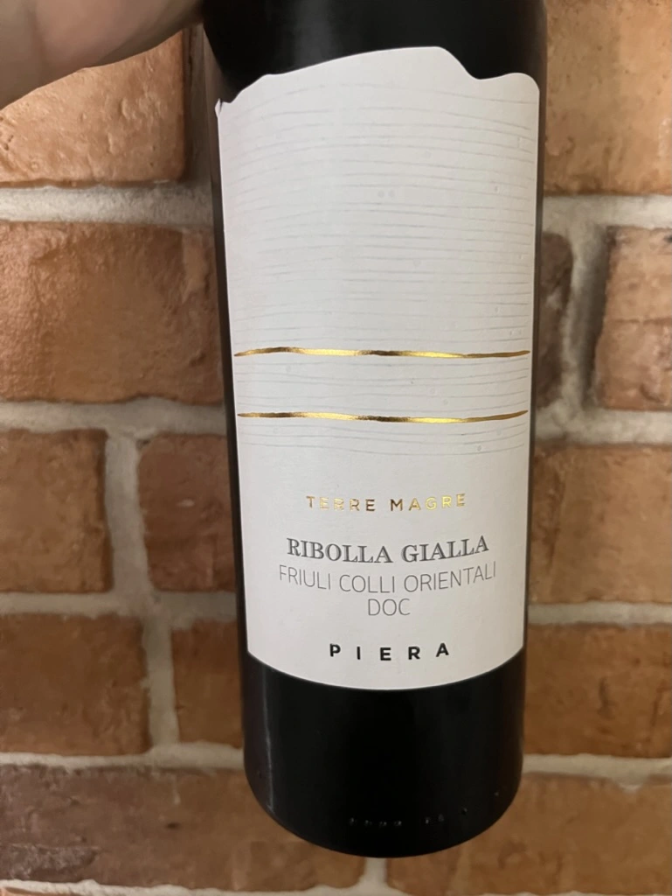

- Type
- White Still, Dry
- Producer
- Piera Martellozzo
- Vintage
- NV
- Location
- Italy, Friuli Colli Orientali DOC
- Grapes
- Ribolla Gialla
- Alcohol
- 13
- Sugar
- NA
- Price
- 515 UAH
- Cellar
- N/A
Ratings
2022-07-27 - 7.50
A wine that was picked solely based on the grape. I was curious to taste non-macerated Ribolla Gialla. Attractive yet discreet bouquet: yeasty notes, white flowers, white stone fruits, tangerine, apple. Fresh with good volume, oily with a flavourful aftertaste full of lime, nuts and flowers. Look, a non-vintage bottle with such features? Give me one more, so I have something to drink while I watch BOTW speed runs.